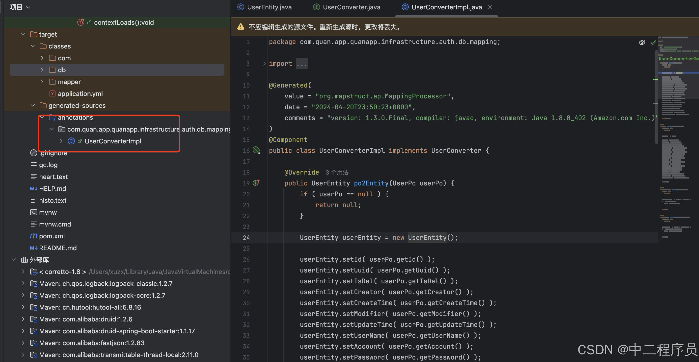
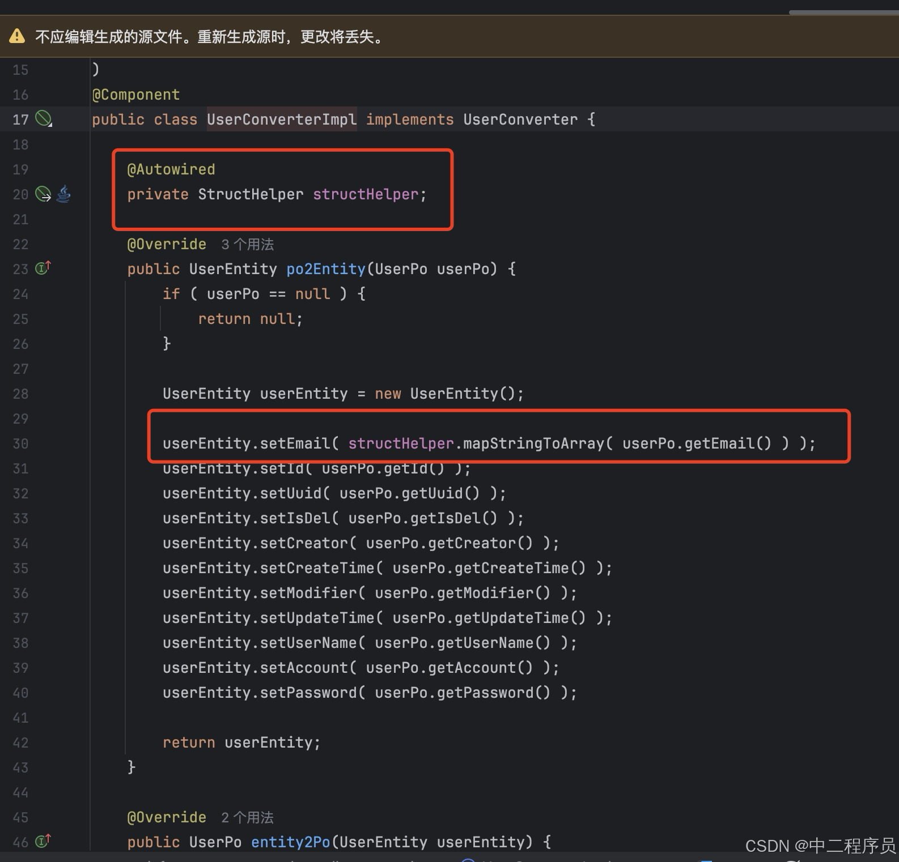
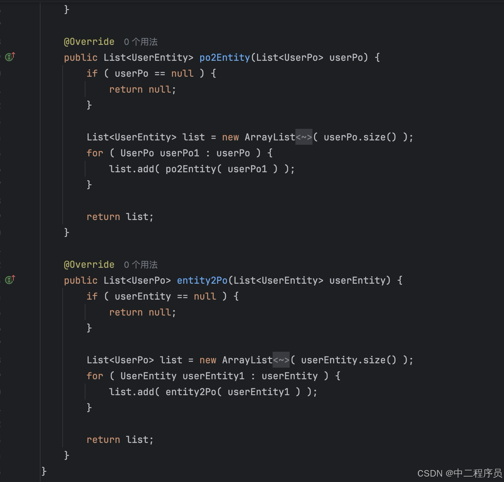
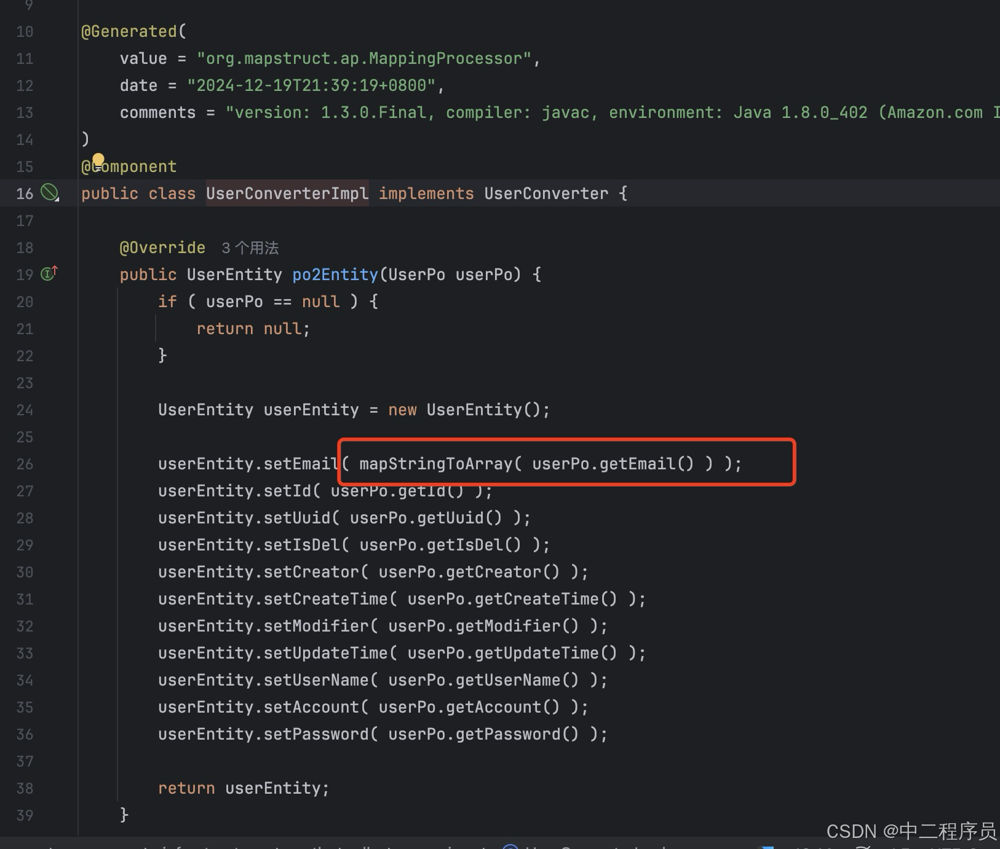

把对象转换规则交给编译期代码生成，可以兼顾可读性、类型检查与执行效率。
工程实践档案 · MapStructOVERVIEW
概述
MapStruct 与 Lombok 都依赖注解处理器。实际项目中应让依赖版本、编译插件和 annotationProcessorPaths 保持一致，并在调整后执行完整的 Maven clean。
MapStruct是一个代码生成器，它大大简化了Java bean 类 型之间映射的实现。他生成的映射代码使用纯方法调用，因此快速，类型安全且高效。
FEATURES
MapStruct 的特性
根据官网的描述和介绍，我们可以得出以下结论：
- 快速：MapStruct会生成基础的get/set方法，基于纯方法调用，避免了复杂的反射处理，大大提高了工作效率
- 类型安全：MapStruct在编译期检查映射规则，确保源对象和目标对象的之间的属性映射是类型安全的。如果规则不完整或者规则异常，可以在编译器提前发现问题，避免运行时异常
- 易于理解/开发：MapStruct的代码简单易懂很容易上手，而且也支持通过各种复杂规则的开发，包括深拷贝和自定义转换函数
BASIC USAGE
基础使用流程
1.引用依赖：首先在 项目 中引入相关依赖（如Maven或Gradle）
<dependency>
<groupId>org.mapstruct</groupId>
<artifactId>mapstruct</artifactId>
<version>1.5.2.Final</version>
</dependency>
<dependency>
<groupId>org.mapstruct</groupId>
<artifactId>mapstruct-processor</artifactId>
<version>1.5.2.Final</version>
<scope>provided</scope>
</dependency>2.创建两个对象，用于bean转换
@Data
public class UserEntity {
private String userName;
private String account;
private String password;
}
@Data
public class UserPo {
private String userName;
private String account;
private String password;
}3.创建一个映射接口：添加注解 @Mapper 声明需要映射的方法。
import org.mapstruct.Mapper;
import org.mapstruct.factory.Mappers;
@Mapper
public interface UserConverter {
UserConverter INSTANCES = Mappers.getMapper(UserConverter.class);
UserEntity po2Entity(UserPo userPo);
UserPo entity2Po(UserEntity userEntity);
List<UserEntity> po2Entity(List<UserPo> userPo);
List<UserPo> entity2Po(List<UserEntity> userEntity);
}4.编译后可以在target下看到生成的代码

5.在业务代码中直接使用即可
/**
* 创建用户
*
* @param entity 用户对象
* @return 结果
*/
@Override
public boolean create(UserEntity entity) {
UserPo po = UserConverter.INSTANCES.entity2Po(entity);
return userDao.insert(po) > 0;
}ADVANCED
高级特性
上面简单介绍了MapStruct的基础使用流程。下面我们介绍下一些进阶的使用方法
1.Spring托管：
上面的方法我们是通过静态方法去调用，那么如何通过spring来管理呢？方法很简单，将上面的接口添加 componentModel = "spring" 即可：
接口层：
import org.mapstruct.Mapper;
@Mapper(componentModel = "spring")
public interface UserConverter {
UserEntity po2Entity(UserPo userPo);
UserPo entity2Po(UserEntity userEntity);
List<UserEntity> po2Entity(List<UserPo> userPo);
List<UserPo> entity2Po(List<UserEntity> userEntity);
}业务层
@Resource
private UserConverter converter;
/**
* 创建用户
*
* @param entity 用户对象
* @return 结果
*/
@Override
public boolean create(UserEntity entity) {
UserPo po = converter.entity2Po(entity);
return userDao.insert(po) > 0;
}2.复杂函数转换：
有时候我们可能遇到特殊的场景，比方说一个字符串转为list，或者字段名不同等场景，这个时候就要用到MapStruct的函数功能
//示例对象
@Data
public class UserEntity {
private String userName;
private String account;
private String password;
private List<String> email;
}
@Data
public class UserPo {
private String userName;
private String account;
private String password;
private String email;
}上面这两个对象中，email字段一个是list一个是string，正常编译肯定报类型转换异常
/Users/workSpace/java/quan-app/src/main/java/com/quan/app/quanapp/infrastructure/auth/db/mapping/UserConverter.java:20:16 java: Can't map property "java.lang.String email" to "java.util.List<java.lang.String> email". Consider to declare/implement a mapping method: "java.util.List<java.lang.String> map(java.lang.String value)".
第一步：新建一个类型转换类，注意要使用MapStruct的@Named注解对方法进行标注
import org.mapstruct.Named;
import java.util.Arrays;
import java.util.List;
public class StructHelper {
/**
* 将字符串转换为字符串数组
*/
@Named("mapStringToArray")
public List<String> mapStringToArray(String str) {
if (str == null) {
return null;
}
// 将字符串分割并转换为 List
return Arrays.asList(str.split(","));
}
/**
* 将字符串转换为字符串数组
*/
@Named("mapArrayToString")
public String mapArrayToString(List<String> array) {
if (array == null || array.isEmpty()) {
return null;
}
return String.join(",", array); // 根据逗号分隔的字符串转换为数组
}
}第二步：在接口类的注释上增加类的引用 uses = StructHelper.class ，具体的接口增加：@Mapping 注解
import com.quan.app.quanapp.application.entity.UserEntity;
import com.quan.app.quanapp.infrastructure.auth.db.po.UserPo;
import org.mapstruct.Mapper;
import org.mapstruct.Mapping;
import java.util.List;
@Mapper(componentModel = "spring", uses = StructHelper.class)
public interface UserConverter {
@Mapping(source = "email", target = "email", qualifiedByName = "mapStringToArray")
UserEntity po2Entity(UserPo userPo);
@Mapping(source = "email", target = "email", qualifiedByName = "mapArrayToString")
UserPo entity2Po(UserEntity userEntity);
List<UserEntity> po2Entity(List<UserPo> userPo);
List<UserPo> entity2Po(List<UserEntity> userEntity);
}第三步：重新编译代码。可以看到生成的代码调用了类型转换方法。

补充说明1：如果你的有定义对象的类型转换，那么list集合转换的时候不需要再重复使用@Mapping 注解，因为MapStruct会复用已有方法而不会重新生成copy代码

补充说明2:如果你不想创建类型转换类觉得太繁琐，也可以在接口中定义：default方法，具体如下
import org.mapstruct.Mapper;
import org.mapstruct.Mapping;
import org.mapstruct.Named;
@Mapper(componentModel = "spring")
public interface UserConverter {
@Mapping(source = "email", target = "email", qualifiedByName = "mapStringToArray")
UserEntity po2Entity(UserPo userPo);
@Mapping(source = "email", target = "email", qualifiedByName = "mapArrayToString")
UserPo entity2Po(UserEntity userEntity);
List<UserEntity> po2Entity(List<UserPo> userPo);
List<UserPo> entity2Po(List<UserEntity> userEntity);
/**
* 将字符串转换为字符串数组
*/
@Named("mapStringToArray")
default List<String> mapStringToArray(String str) {
if (str == null) {
return null;
}
// 将字符串分割并转换为 List
return Arrays.asList(str.split(","));
}
/**
* 将字符串转换为字符串数组
*/
@Named("mapArrayToString")
default String mapArrayToString(List<String> array) {
if (array == null || array.isEmpty()) {
return null;
}
return String.join(",", array); // 根据逗号分隔的字符串转换为数组
}
}生成的代码直接调用接口方法

TROUBLESHOOTING
常见问题解答
1.MapStruct 和 lombok的版本兼容性问题：
上面我们说过，MapStruct是基于原始get/set方法来生成代码进行bean拷贝，所以当MapStruct 和 lombok同时使用时会遇到兼容性问题（Lombok 1.18.12版本以下不影响，1.18.16 版本以上会受影响），在启动的时候报以下错误
***************************
APPLICATION FAILED TO START
***************************
Description:
A component required a bean of type 'com.quan.app.quanapp.infrastructure.auth.db.mapping.UserConverter' that could not be found.
Action:
Consider defining a bean of type 'com.quan.app.quanapp.infrastructure.auth.db.mapping.UserConverter' in your configuration.解决方案：在pom中新增以下配置<annotationProcessorPaths>，然后重新mvn clean ，mvn install。一定要重新用mvn编译，避免缓存问题
<build>
<plugins>
<plugin>
<groupId>org.apache.maven.plugins</groupId>
<artifactId>maven-compiler-plugin</artifactId>
<version>3.8.1</version>
<configuration>
<source>1.8</source>
<target>1.8</target>
<annotationProcessorPaths>
<path>
<groupId>org.mapstruct</groupId>
<artifactId>mapstruct-processor</artifactId>
<version>${org.mapstruct.version}</version>
</path>
<path>
<groupId>org.projectlombok</groupId>
<artifactId>lombok</artifactId>
<version>1.18.16</version>
</path>
<!-- This is needed when using Lombok 1.18.16 and above -->
<path>
<groupId>org.projectlombok</groupId>
<artifactId>lombok-mapstruct-binding</artifactId>
<version>0.2.0</version>
</path>
</annotationProcessorPaths>
</configuration>
</plugin>
</plugins>
</build>2.定义mapping后不生效的问题：
之前遇到一个奇怪的问题,两个要映射的对象，字段名相同，字段类型不同，对象转换过程中明明定义了mapping，引用了 qualifiedByName = "mapStringToArray" 方法。
@Getter
@Setter
public class A {
private List<String> orderSource;
}
@Getter
@Setter
public class B {
private String orderSource;
}
//具体方法
@Mapping(source = "orderSource", target = "orderSource", qualifiedByName = "mapStringToArray")
A poToRes(B one);但是编译过程中还是报以下错误，指明类型转换异常，这种情况暂未找到根本问题，怀疑是底层代码生成时优先级的问题，只能通过其他方法规避下
Can't map property "String B.orderSource" to "List<String> A.orderSource". Consider to declare/implement a mapping method: "List<String> map(String value)".
解决方案：将两个同名字段名修改下，采用不同的字段名，然后通过source 和 target做映射。然后问题解决，代码正确生成。
@Getter
@Setter
public class A {
private List<String> orderSourcs;
}
@Getter
@Setter
public class B {
private String orderSource;
}
//具体方法
@Mapping(source = "orderSource", target = "orderSources", qualifiedByName = "mapStringToArray")
A poToRes(B one);3.其他注意到问题：
接口上的mappr 的路径为：org.mapstruct.Mapper ，不是mybatis的 org. apache .ibatis.annotations.Mapper
MIGRATION & SOURCE
迁移说明与原始来源
本文由本地保存的 CSDN 正文迁移而来，保留原始实践步骤、代码与截图，并对标题层级、段落和版本提示进行了重新整理。
《MapStruct 使用教程与常见问题》，原发布于 2024-12-19。示例环境与结论应结合文章中的版本背景阅读。
查看 CSDN 原文 ↗让对象转换规则在编译期变得清晰可见